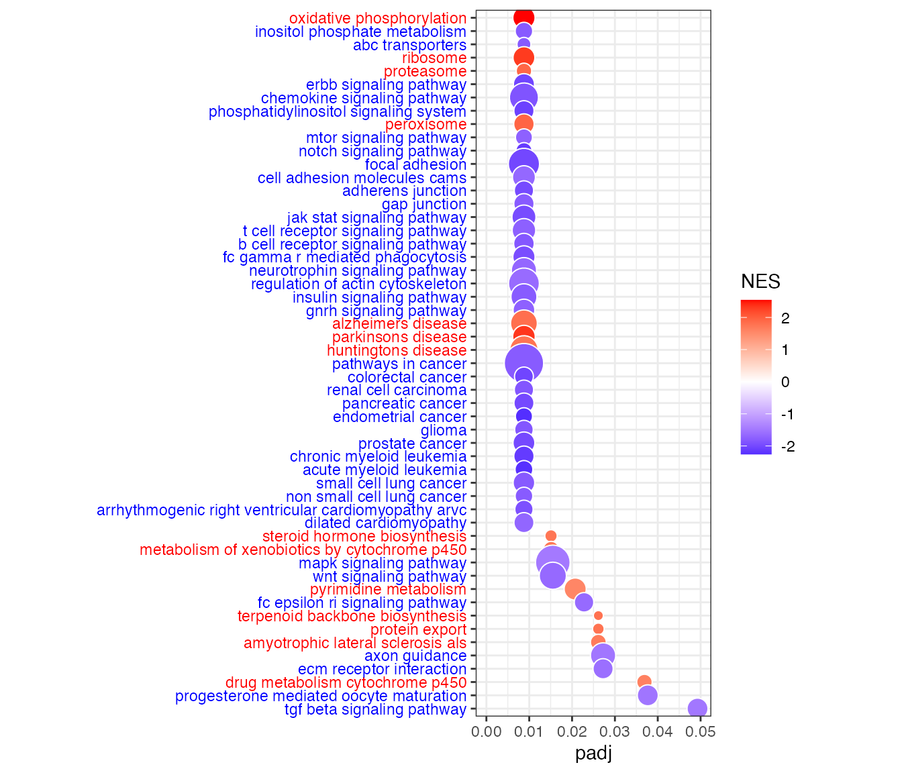

Comparing LIONESS Regulatory Networks using limma
Camila Lopes-Ramos
2019-12-20
LionessApplicationinGTExData.RmdIntroduction
LIONESS (Linear Interpolation to Obtain Network Estimates for Single Samples) is a method for creating sample-specific networks. When applied to a PANDA regulatory network, the result is a set of gene regulatory networks, one for each sample in the gene expression dataset. More information on LIONESS can be found in the published paper: https://doi.org/10.1016/j.isci.2019.03.021
In this vignette, we will compare LIONESS regulatory networks from 207 females and 238 males with colon cancer using RNA-Seq data from TCGA. We will compare the edge weights between females and males using a linear regression model and correcting for the covariates age, race, and disease stage, as available in the limma package. We will also compare the gene’s in-degree (defined as the sum of the gene’s incoming edge weights from all TFs in the network). Finally, we will perform gene set enrichment analysis to find the pathways enriched for genes differentially targeted by sex in colon cancer.
Install packages
if (!requireNamespace("BiocManager", quietly = TRUE))
install.packages("BiocManager",repos = "http://cran.us.r-project.org")
BiocManager::install("limma")
BiocManager::install("fgsea")
BiocManager::install("Biobase")
# install.packages("ggplot2",repos = "http://cran.us.r-project.org")
install.packages("igraph",repos = "http://cran.us.r-project.org")Load the data
For the purposes of demonstrating the workflow, we will load only a subet of LIONESS networks. Our subset shows the edge weights for 50,000 edges (rows) by 445 samples (columns). Let’s take a look at the networks:
# download a subset of LIONESS networks from netZooR AWS Bucket to working directory.
system("curl -O https://netzoo.s3.us-east-2.amazonaws.com/netZooR/tutorial_datasets/lioness_coloncancer_subset.txt")
lioness <- read.delim("./lioness_coloncancer_subset.txt",stringsAsFactors = F, check.names = F)
head(lioness[,1:5])
#> TF gene TCGA-AY-A71X-01A-12R-A37K-07 TCGA-A6-4105-01A-02R-1774-07
#> 1 FOXD2 MGST3 2.3076 3.2365
#> 2 MEF2A MGST3 1.8015 3.2350
#> 3 TBP MGST3 2.2111 3.1582
#> 4 TBPL2 GSTA4 2.2128 4.5202
#> 5 POU3F3 MGST2 4.2174 5.3111
#> 6 HMG20B GSTA4 2.5219 4.4398
#> TCGA-AA-3526-01A-02R-A32Z-07
#> 1 3.2611
#> 2 3.2992
#> 3 3.3390
#> 4 4.4191
#> 5 5.4973
#> 6 4.7402
# Add row names as "TF_gene" and remove columns 1 and 2 with TF and gene name
rownames(lioness) <- apply(lioness, 1, function(x){
paste(x[1], x[2], sep="_")
})
# Remove TF and gene columns
lioness <- lioness[,-(1:2)]
head(lioness[,1:5])
#> TCGA-AY-A71X-01A-12R-A37K-07 TCGA-A6-4105-01A-02R-1774-07
#> FOXD2_MGST3 2.3076 3.2365
#> MEF2A_MGST3 1.8015 3.2350
#> TBP_MGST3 2.2111 3.1582
#> TBPL2_GSTA4 2.2128 4.5202
#> POU3F3_MGST2 4.2174 5.3111
#> HMG20B_GSTA4 2.5219 4.4398
#> TCGA-AA-3526-01A-02R-A32Z-07 TCGA-F4-6463-01A-11R-1723-07
#> FOXD2_MGST3 3.2611 2.7414
#> MEF2A_MGST3 3.2992 2.7100
#> TBP_MGST3 3.3390 2.6938
#> TBPL2_GSTA4 4.4191 4.6907
#> POU3F3_MGST2 5.4973 5.0715
#> HMG20B_GSTA4 4.7402 4.6494
#> TCGA-A6-5665-01A-01R-1653-07
#> FOXD2_MGST3 -2.5282
#> MEF2A_MGST3 -1.7591
#> TBP_MGST3 -1.3487
#> TBPL2_GSTA4 4.1184
#> POU3F3_MGST2 1.5492
#> HMG20B_GSTA4 4.1758
# Load the complete gene in-degree (sum of all edge weights for each gene) and clinical data stored as an expression set
system("curl -O https://netzoo.s3.us-east-2.amazonaws.com/netZooR/tutorial_datasets/inDegree_allEdges_coloncancer.rdata")
load("./inDegree_allEdges_coloncancer.rdata")
# Clinical information
pData(obj1)[1:5,30:35]
#> gender birth_days_to race
#> TCGA-AY-A71X-01A-12R-A37K-07 FEMALE -19904 black
#> TCGA-A6-4105-01A-02R-1774-07 MALE -29097 caucasian
#> TCGA-AA-3526-01A-02R-A32Z-07 MALE -21123 <NA>
#> TCGA-F4-6463-01A-11R-1723-07 MALE -18804 caucasian
#> TCGA-A6-5665-01A-01R-1653-07 FEMALE -30915 caucasian
#> ethnicity
#> TCGA-AY-A71X-01A-12R-A37K-07 NOT HISPANIC OR LATINO
#> TCGA-A6-4105-01A-02R-1774-07 NOT HISPANIC OR LATINO
#> TCGA-AA-3526-01A-02R-A32Z-07 [Not Available]
#> TCGA-F4-6463-01A-11R-1723-07 NOT HISPANIC OR LATINO
#> TCGA-A6-5665-01A-01R-1653-07 NOT HISPANIC OR LATINO
#> history_other_malignancy
#> TCGA-AY-A71X-01A-12R-A37K-07 No
#> TCGA-A6-4105-01A-02R-1774-07 Yes
#> TCGA-AA-3526-01A-02R-A32Z-07 No
#> TCGA-F4-6463-01A-11R-1723-07 No
#> TCGA-A6-5665-01A-01R-1653-07 No
#> history_neoadjuvant_treatment
#> TCGA-AY-A71X-01A-12R-A37K-07 No
#> TCGA-A6-4105-01A-02R-1774-07 No
#> TCGA-AA-3526-01A-02R-A32Z-07 No
#> TCGA-F4-6463-01A-11R-1723-07 No
#> TCGA-A6-5665-01A-01R-1653-07 NoCompare the edge weights
Compare the edge weights between males and females using linear regression model (limma package) and adjusting for covariates: stage, age, race.
Run limma
# Define the covariates
gender <- factor(as.character(pData(obj1)$gender),levels=c("MALE","FEMALE"))
stage <- (as.character(pData(obj1)$uicc_stage))
stage[which(is.na(stage))] <- "NA"
stage <- as.factor(stage)
race <- as.character(pData(obj1)$race)
race[which(is.na(race))] <- "NA"
race <- as.factor(race)
age <- as.numeric(pData(obj1)$age_at_initial_pathologic_diagnosis)
age[which(is.na(age))] <- mean(age,na.rm=TRUE)
design = model.matrix(~ stage + race + age + gender)
# Run limma
fitGood = lmFit(as.matrix(lioness),design)
fitGood = eBayes(fitGood)
tb = topTable(fitGood,coef="genderFEMALE",number=Inf)
head(tb)
#> logFC AveExpr t P.Value adj.P.Val
#> NKX2-5_SLCO3A1 -1.0747338 2.7091520 -4.871484 1.552517e-06 0.04199842
#> SOX12_SLCO3A1 -2.0624528 0.9997061 -4.801388 2.169196e-06 0.04199842
#> TBPL2_SLCO3A1 -2.6081364 0.2806817 -4.708294 3.361432e-06 0.04199842
#> ZNF232_KBTBD2 0.9843244 4.3091270 4.646466 4.478727e-06 0.04199842
#> NFATC3_PORCN -0.6981933 1.8005115 -4.637017 4.678219e-06 0.04199842
#> FOXO3_PDS5B 0.5946457 4.6099430 4.572347 6.291516e-06 0.04199842
#> B
#> NKX2-5_SLCO3A1 4.751052
#> SOX12_SLCO3A1 4.456929
#> TBPL2_SLCO3A1 4.072181
#> ZNF232_KBTBD2 3.820378
#> NFATC3_PORCN 3.782159
#> FOXO3_PDS5B 3.522461Visualize the top edges with differential weights by sex
We select the top 50 edges with differential edge weights by sex and convert them into an igraph graph.data.frame object for visualization. We color edges red if they have higher coefficients in the female group, and blue if they have higher coefficients in the female group.
toptable_edges <- t(matrix(unlist(c(strsplit(row.names(tb), "_"))),2))
z <- cbind(toptable_edges[1:50,], tb$logFC[1:50])
g <- graph.data.frame(z, directed=FALSE)
E(g)$weight <- as.numeric(z[,3])
E(g)$color[E(g)$weight<0] <- "blue"
E(g)$color[E(g)$weight>0] <- "red"
E(g)$weight <- 1
par(mar=c(0,0,0,0))
plot(g, vertex.label.cex=0.7, vertex.size=10, vertex.label.font=3, edge.width=5*(abs(as.numeric(z[,3]))))
Compare gene’s in-degree
Compare the gene’s in-degree between males and females using linear regression model (limma package) and adjusting for covariates: stage, age, race.
Run limma
indegree <- assayData(obj1)[["quantile"]]
head(indegree[,1:3])
#> TCGA-AY-A71X-01A-12R-A37K-07 TCGA-A6-4105-01A-02R-1774-07
#> A1BG -300.7761 -309.57401
#> A1CF 129.2204 37.11690
#> A2M 447.1353 418.45826
#> A4GALT -215.1396 -155.53291
#> AAAS -342.6264 -344.35561
#> AACS 369.7163 22.04239
#> TCGA-AA-3526-01A-02R-A32Z-07
#> A1BG -321.71607
#> A1CF 14.00825
#> A2M 397.25374
#> A4GALT -191.21809
#> AAAS -332.18513
#> AACS 485.25668
# Use the same design matrix as before
fitGood = lmFit(indegree,design)
fitGood = eBayes(fitGood)
tb_degree = topTable(fitGood,coef="genderFEMALE",number=Inf)
head(tb_degree)
#> logFC AveExpr t P.Value adj.P.Val B
#> OTUD4 -77.70043 306.3134 -5.223489 2.716224e-07 0.003481384 -4.225218
#> USP32 -86.32333 468.3938 -4.191101 3.357367e-05 0.089161433 -4.357195
#> MARCH8 -107.59057 183.7655 -4.172733 3.628637e-05 0.089161433 -4.359326
#> POLR2G 68.22211 -339.4559 4.089615 5.139259e-05 0.089161433 -4.368867
#> TBL1X -171.12318 206.8917 -4.040868 6.285937e-05 0.089161433 -4.374386
#> GUK1 58.76388 -228.4243 4.030137 6.569152e-05 0.089161433 -4.375593
# Save gene ranks
indegree_rank <- setNames(object=tb_degree[,"t"], rownames(tb_degree))Gene Set Enrichment Analysis
Well will use the fgsea package to perform gene set enrichment analysis. We need to point to a ranked gene list (for example the gene in-degree statistical difference (t value) between males and females), and a list of gene sets (or signatures) in gmt format to test for enrichment. The gene sets can be downloaded from MSigDB: http://software.broadinstitute.org/gsea/msigdb Same gene annotation should be used in the ranked gene list and gene sets.
Run fgsea
system("curl -O https://netzoo.s3.us-east-2.amazonaws.com/netZooR/tutorial_datasets/c2.cp.kegg.v7.0.symbols.gmt")
pathways <- gmtPathways("./c2.cp.kegg.v7.0.symbols.gmt")
fgseaRes <- fgsea(pathways, indegree_rank, minSize=15, maxSize=500, nperm=1000)
head(fgseaRes)
#> pathway pval padj ES
#> 1: KEGG_GLYCOLYSIS_GLUCONEOGENESIS 0.13407821 0.2422550 0.3240518
#> 2: KEGG_CITRATE_CYCLE_TCA_CYCLE 0.55063291 0.6839893 -0.2702159
#> 3: KEGG_PENTOSE_PHOSPHATE_PATHWAY 0.21880998 0.3479079 0.3795079
#> 4: KEGG_FRUCTOSE_AND_MANNOSE_METABOLISM 0.04536862 0.1053964 0.4200039
#> 5: KEGG_GALACTOSE_METABOLISM 0.86895161 0.9528504 -0.2250237
#> 6: KEGG_FATTY_ACID_METABOLISM 0.14981273 0.2589155 0.3533304
#> NES nMoreExtreme size leadingEdge
#> 1: 1.2458518 71 47 ALDOB,TPI1,ALDH3A1,BPGM,PKLR,PDHB,...
#> 2: -0.9423630 260 29 SDHA,CS,OGDH,PDHA1,ACO2,OGDHL,...
#> 3: 1.2034168 113 21 ALDOB,DERA,RPE,TALDO1,PGM2,ALDOC,...
#> 4: 1.4514680 23 30 ALDOB,TSTA3,MTMR6,TPI1,FPGT,PMM2,...
#> 5: -0.7214612 430 20 HK1,GLA,GANC,PFKL,UGP2,PFKM
#> 6: 1.2599517 79 33 GCDH,ACAT2,ACOX3,EHHADH,ECHS1,CPT2,...
# Subset to pathways with FDR < 0.05
sig <- fgseaRes[fgseaRes$padj < 0.05,]
# Top 10 pathways enriched in females
sig$pathway[sig$NES > 0][1:10]
#> [1] "KEGG_STEROID_HORMONE_BIOSYNTHESIS"
#> [2] "KEGG_OXIDATIVE_PHOSPHORYLATION"
#> [3] "KEGG_PYRIMIDINE_METABOLISM"
#> [4] "KEGG_TERPENOID_BACKBONE_BIOSYNTHESIS"
#> [5] "KEGG_METABOLISM_OF_XENOBIOTICS_BY_CYTOCHROME_P450"
#> [6] "KEGG_DRUG_METABOLISM_CYTOCHROME_P450"
#> [7] "KEGG_RIBOSOME"
#> [8] "KEGG_PROTEASOME"
#> [9] "KEGG_PROTEIN_EXPORT"
#> [10] "KEGG_PEROXISOME"
# Top 10 pathways enriched in males
sig$pathway[sig$NES < 0][1:10]
#> [1] "KEGG_INOSITOL_PHOSPHATE_METABOLISM"
#> [2] "KEGG_ABC_TRANSPORTERS"
#> [3] "KEGG_MAPK_SIGNALING_PATHWAY"
#> [4] "KEGG_ERBB_SIGNALING_PATHWAY"
#> [5] "KEGG_CHEMOKINE_SIGNALING_PATHWAY"
#> [6] "KEGG_PHOSPHATIDYLINOSITOL_SIGNALING_SYSTEM"
#> [7] "KEGG_MTOR_SIGNALING_PATHWAY"
#> [8] "KEGG_WNT_SIGNALING_PATHWAY"
#> [9] "KEGG_NOTCH_SIGNALING_PATHWAY"
#> [10] "KEGG_AXON_GUIDANCE"Bubble plot of differentially targeted pathways
Bubble plot of gene sets on y-axis and adjusted p-value (padj) on x-axis. Bubble size indicates the number of genes in each gene set, and bubble color indicates the normalized enrichment score (NES). Blue is for negative NES (enrichment of higher targeted genes in males), and red is for positive NES (enrichment of higher targeted genes in females).
dat <- data.frame(fgseaRes)
# Settings
fdrcut <- 0.05 # FDR cut-off to use as output for significant signatures
dencol_neg <- "blue" # bubble plot color for negative ES
dencol_pos <- "red" # bubble plot color for positive ES
signnamelength <- 4 # set to remove prefix from signature names (2 for "GO", 4 for "KEGG", 8 for "REACTOME")
asp <- 3 # aspect ratio of bubble plot
charcut <- 100 # cut signature name in heatmap to this nr of characters
# Make signature names more readable
a <- as.character(dat$pathway) # 'a' is a great variable name to substitute row names with something more readable
for (j in 1:length(a)){
a[j] <- substr(a[j], signnamelength+2, nchar(a[j]))
}
a <- tolower(a) # convert to lower case (you may want to comment this out, it really depends on what signatures you are looking at, c6 signatures contain gene names, and converting those to lower case may be confusing)
for (j in 1:length(a)){
if(nchar(a[j])>charcut) { a[j] <- paste(substr(a[j], 1, charcut), "...", sep=" ")}
} # cut signature names that have more characters than charcut, and add "..."
a <- gsub("_", " ", a)
dat$NAME <- a
# Determine what signatures to plot (based on FDR cut)
dat2 <- dat[dat[,"padj"]<fdrcut,]
dat2 <- dat2[order(dat2[,"padj"]),]
dat2$signature <- factor(dat2$NAME, rev(as.character(dat2$NAME)))
# Determine what labels to color
sign_neg <- which(dat2[,"NES"]<0)
sign_pos <- which(dat2[,"NES"]>0)
# Color labels
signcol <- rep(NA, length(dat2$signature))
signcol[sign_neg] <- dencol_neg # text color of negative signatures
signcol[sign_pos] <- dencol_pos # text color of positive signatures
signcol <- rev(signcol) # need to revert vector of colors, because ggplot starts plotting these from below
# Plot bubble plot
g<-ggplot(dat2, aes(x=padj,y=signature,size=size))
g+geom_point(aes(fill=NES), shape=21, colour="white")+
theme_bw()+ # white background, needs to be placed before the "signcol" line
xlim(0,fdrcut)+
scale_size_area(max_size=10,guide="none")+
scale_fill_gradient2(low=dencol_neg, high=dencol_pos)+
theme(axis.text.y = element_text(colour=signcol))+
theme(aspect.ratio=asp, axis.title.y=element_blank()) # test aspect.ratio